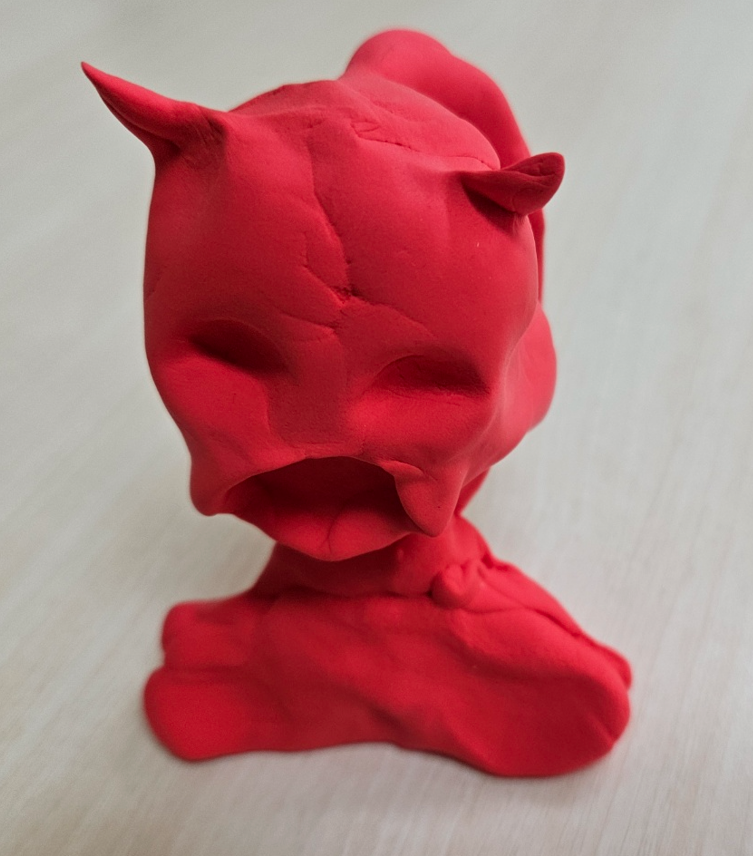

초등학교 5학년 시기는 아동이 중년기(중학년기)에서 후기 아동기로 넘어가는 중요한 발달 단계이다. 이 시기의 아동은 신체적 성장과 함께 인지적, 사회적, 정서적 발달이 두드러지며, 학교와 가정에서의 경험이 중요한 영향을 미친다. 또한, 또래관계가 강화되고 학업의 난이도가 높아지면서 자아 개념과 자율성이 점점 확립되어 시기이다.

1. 신체적 운동능력 발달 : 손과 눈의 협응력 증가
초등 5학년 아동의 신장은 개별 차이가 있지만, 평균적으로 여아가 남아보다 더 빠르게 성장하는 경향이 있다. 성장 속도가 이전보다 더욱 증가하며, 신체 비율이 점차 성인과 유사해진다. 또한 근육량이 증가하고 체력이 향상되면서 운동 능력이 발달한다. 대근육 운동 능력이 점점 정교해지며, 스포츠 활동에 대한 관심도 높아진다. 이와 함께 소근육 운동 능력도 향상되어 손글씨나 미술 활동에서 더욱 세밀한 표현이 가능해진다.
첫째, 아동은 손과 눈의 협응력이 발달하여 공놀이나 악기 연주 등의 활동을 능숙하게 수행할 수 있다. 활발한 신체 활동으로 인해 피로를 자주 느낄 수 있으며, 성장통을 경험하는 경우가 많아 특히 밤에 무릎이나 다리에 통증을 호소하기도 한다. 감각 기관이 더욱 정교해져 시각적, 청각적 정보 처리 능력이 향상되며, 영양과 운동 습관에 따라 비만이나 저체중 문제가 나타나기도 한다. 유치가 빠지고 영구치가 자리 잡으면서 치아 관리의 중요성이 커진다.
둘째, 사춘기의 초기 징후가 나타나면서 성 호르몬의 변화가 시작되고, 피부 상태가 변하며 땀 분비가 증가하여 개인 위생 관리가 더욱 중요해진다. 골격이 성장하면서 자세 불균형이나 척추 측만증이 발생할 가능성이 있으며, 시력 저하가 나타날 수 있어 정기적인 안과 검진이 필요하다. 몸의 균형 감각이 발달하여 다양한 신체 활동을 즐길 수 있으며, 유연성이 향상되지만 과도한 운동으로 인해 부상을 입을 위험도 존재한다.
셋째, 체중에 대한 관심이 증가하면서 외모에 대한 신경을 쓰기 시작하고, 건강한 식습관 형성이 중요한 시기가 된다. 하지만 편식을 하거나 특정 음식을 선호하는 경향이 나타날 수도 있다. 신체 발달 속도에 차이가 발생하면서 또래와 비교하며 열등감을 가질 수 있으며, 성별에 따른 신체 변화가 점차 분명해진다. 운동을 좋아하는 아동과 그렇지 않은 아동 간의 신체 활동 참여도 차이가 커질 수 있다. 여전히 유아적인 신체 특성이 남아 있으며, 피로 회복 속도가 빠르지만 수면 시간이 부족하면 학습과 성장에 부정적인 영향을 미칠 수 있다.
넷째, 감각 운동 협응력이 정교해지면서 조작 활동이 능숙해지고, 집중력이 향상되어 오랫동안 앉아서 학습하는 것이 가능해진다. 성호르몬 변화로 인해 기분 변화가 생길 수 있으며, 스스로 건강 관리를 시도하려는 경향이 나타나기도 한다.
이 시기의 아동은 대사율이 높아 에너지 소비가 많아지며, 자주 배고픔을 느끼는 모습을 보인다. 또한, 과도한 신체 활동 후 피로를 호소하는 경우가 증가한다. 이러한 신체적 특성들은 아동의 일상생활과 학습 활동에 중요한 영향을 미치며, 이를 고려한 적절한 지도와 관리가 필요하다.
2. 인지적 특성 : 언어적 표현력이 풍부, 논리적 사고 발달
초등 5학년 아동은 논리적 사고 능력이 발달하면서 보다 복잡한 문제 해결이 가능해진다. 단순한 경험을 넘어 원인과 결과를 분석하고, 여러 가지 요소를 고려하여 결론을 도출하는 능력이 향상된다. 또한, 가설을 세우고 이를 실험적으로 검증하는 사고 과정이 가능해지며, 과학적인 탐구 능력이 발달한다.
첫째, 아동은 기억력이 향상되어 장기 기억을 효과적으로 활용할 수 있으며, 새로운 정보를 조직화하여 저장하는 능력이 증가한다. 언어적 표현력이 풍부해지면서 논리적인 설명이 가능해지고, 자신의 의견을 보다 명확하게 전달할 수 있다. 독해 능력이 발전하면서 긴 글을 읽고 요약하는 능력이 강화되며, 다양한 주제에 대한 이해력이 높아진다.
둘째, 수학적 사고력이 향상되면서 분수, 소수 등의 개념을 보다 쉽게 이해할 수 있으며, 복잡한 연산이나 문제 해결 능력이 발달한다. 또한, 도덕적 판단 능력이 성장하면서 공정성과 규칙에 대한 인식이 깊어지며, 자신의 행동이 타인에게 미치는 영향을 고려하려는 태도가 나타난다.
셋째, 창의성이 증가하면서 새로운 아이디어를 떠올리고, 이를 구체적인 형태로 발전시키는 능력이 발달한다. 자기주도적 학습 태도가 형성되며, 학습 계획을 세우고 실행하는 능력이 향상된다. 이와 함께 주의 집중 시간이 길어져 오랜 시간 학습에 몰두할 수 있지만, 특정한 관심 분야에 더 집중하는 경향이 있다.
넷째, 자기 반성이 가능해지면서 자신의 학습 방법을 점검하고, 더 나은 학습 전략을 찾으려는 노력이 증가한다. 실수를 줄이려는 노력과 함께 완벽주의적인 성향이 나타날 수 있으며, 학습에서의 성취를 중시하는 태도가 형성된다. 다양한 학문 분야에 대한 관심이 증가하면서 호기심이 왕성해지고, 깊이 있는 탐구를 시도하는 경우가 많아진다.
이러한 인지적 발달은 초등 5학년 아동이 보다 독립적인 학습자로 성장할 수 있도록 돕는 중요한 요소이며, 학습 환경과 지도 방식이 인지적 성장을 촉진하는 데 중요한 역할을 한다.
3. 사회적 우정 관계 : 협동과 타협의 중요성 인식
초등 5학년 아동은 또래 관계가 점점 더 중요해지며, 친구들과의 관계 속에서 자신의 정체성을 형성해 나간다. 이 시기의 아동들은 친구와의 협력과 경쟁을 경험하면서 사회적 기술을 배우며, 집단 속에서 소속감을 느끼고 싶어 한다. 또한, 특정한 친구와 깊은 우정을 형성하고, 자신과 비슷한 관심사를 가진 친구들을 선호하는 경향이 있다.
첫째, 또래 집단에서의 인정이 중요해지면서 그룹 내에서 인기 있는 행동을 모방하려는 경향이 있으며, 사회적 비교를 통해 자신의 위치를 확인하려고 한다. 이러한 과정에서 친구와의 갈등이 발생하기도 하지만, 점점 더 효과적인 갈등 해결 전략을 익혀 나간다. 협동과 타협의 중요성을 인식하며, 상대방의 감정을 이해하려는 공감 능력이 발달한다.
둘째, 교사나 부모 등 권위적인 인물의 지도를 따르는 것뿐만 아니라, 또래의 의견을 더욱 중요하게 여기며 영향을 받는다. 이로 인해 또래 압력을 경험할 수 있으며, 친구의 행동을 따라 하려는 경향이 나타난다. 그룹 활동을 통해 규칙을 준수하는 능력이 향상되며, 팀워크와 책임감을 배워 나간다. 또한, 도덕적 가치와 규범을 인식하고, 공정성과 정의에 대한 개념이 발달한다.
셋째, 아동들은 자신의 행동이 타인에게 미치는 영향을 점점 더 고려하게 되며, 다른 사람의 입장에서 생각하는 능력이 발달한다. 친구와의 상호작용을 통해 협력과 배려를 학습하며, 집단 내에서의 역할 수행을 중요하게 여긴다. 또한, 가정과 학교에서의 사회적 기대를 인식하며, 자신이 속한 집단에서 어떻게 행동해야 하는지를 이해하려고 노력한다.
초등5학년 시기는 사회적 관계가 확장됨에 따라 인터넷과 SNS 등 온라인 환경에서 또래와의 교류가 증가할 수 있으며, 이를 통해 다양한 사회적 상호작용을 경험하게 된다. 그러나 온라인 활동이 증가하면서 사이버 괴롭힘이나 부적절한 정보 노출 등의 위험 요소도 존재할 수 있어 부모나 교사의 지도와 관심이 필요하다.
이처럼 초등 5학년 아동의 사회적 특성은 또래 관계를 중심으로 형성되며, 이를 통해 협력, 타협, 공감, 규칙 준수 등의 사회적 기술을 익혀 나간다. 이러한 경험들은 아동의 사회성 발달에 중요한 역할을 하며, 건강한 인간관계를 형성하는 데 필요한 기초가 된다.
참고문헌
교육부. (2021). 초등 교육과정 해설: 학습자 중심의 교육 방법론.교육부 출판.
Vygotsky, L. S. (1978). Mind in Society: The Development of Higher Psychological Processes.Harvard University Press.
Piaget, J. (1952). The Origins of Intelligence in Children.Norton & Company.
2024.07.21 - [상담] - 초등 6학년 갈팡질팡 심리적 특징과 학교에서 사회적 관계
초등 6학년 갈팡질팡 심리적 특징과 학교에서 사회적 관계
초등학교 6학년 남자 아동들은 사춘기의 문턱에 서 있으며, 이 시기에는 다양한 심리적, 사회적 변화가 나타납니다. 이 나이의 아동들은 특히 신체적 성장, 정서적 독립, 그리고 사회적 관계의
think-sis.co.kr